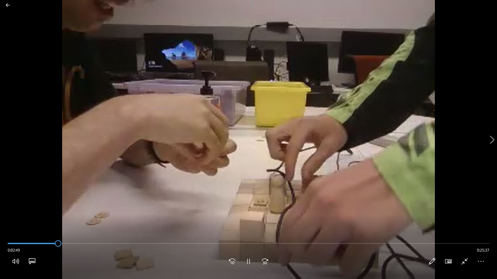
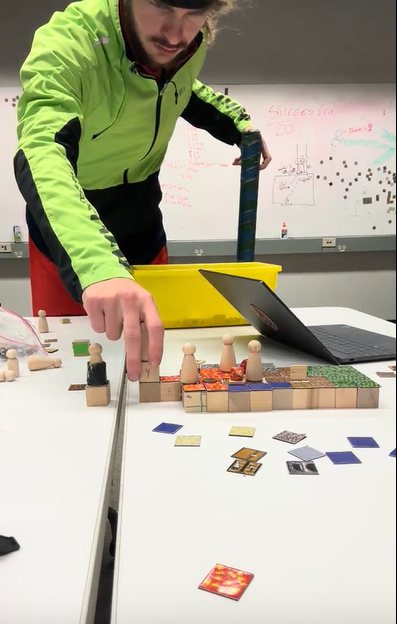

This is mainly a place to document the process of our capstone game, Farm Strategy, Leaves of God, Fire Emblem Farm Sim, or one of the many other names we had for it. This project was done for UC Santa Cruz's CMPM 171: Game Design Studio in the Winter Quarter of 2024 (January-March).
We hope this site provides you not only with some info on the game, but a better look at our process and procedure in the game's development and where we ended up after a few months of production.
Excuse the past-present shifting tenses, I wrote this in a bit of a rush. Enjoy!
Class Format
The class was split into three distinct sprints.
Sprint 1
Sprint 1 was mainly focused on Low Fidelity Prototypes, micro-projects aimed at exploring the core of the game's feel and design in various ways, typically in a rough (and often physical) format.


Sprint 2
Sprint 2 had us doing High Fidelity Prototypes, (ideally) more high-effort prototypes trying to nail down the look and feel of the project beyond mere explorations of content.
Sprint 3
Sprint 3 was where we tied it all together into a proper vertical slice! (Or were supposed to.)
Other requirements
Our game was required to support at least two different written languages. At least one language using either a logographic script (e.g. Kanji Links to an external site.) or a right-to-left script (e.g. Arabic.) We chose English, Spanish and Japanese.
Solution: Godot's localization system is super robust, and it involves making a spreadsheet and making tokens for each localization string per language before simply importing it back into the engine. Piece of cake!
Limited Vision (Seeing): game must be completable even when simulating vision limitations: contrast and color sensitivity.
Solution: We could probably do better on this one, but at least all enemies are of the same type and all the player units are unique and not that enemy.
Limited Dexterity (Touching): game must be completable by a player using just one hand on the controls at a time.
Solution: A player's left hand can use space, escape and WASD to control the game entirely. A player's right hand can use a mouse to control the whole game with left and right click.
Limited Audition (Hearing): game must be completable by a player who cannot hear any sounds from the game.
Solution: None of the sounds in the game are required, since it's a top-down perspective.
Limited Energy and Attention (Resting): During a completion run of the game, gameplay should always reach a natural resting point within two minutes of active play without the player needing to take an extra action to pause the game.
Solution: The strategy genre is great for this because you don't even have to pause. The game only moves when you move, save for the enemy phases which are rarely if ever more than 40-50 seconds long.
We chose to do an Offline Digital Game, which requires the total data transfer involved in downloading the game must be less than 100 MiB, and that The game must be entirely completable while the player's device is disconnected from the internet. At present, the game unzipped is ~70 MiB, so we're good on all that.
There were other options, like an online digital game or physically based game, but it felt a little arbitrary given how easily portable Godot is to other platforms, we learned.
Our Journey
Part I: Optimism
I, Benjamin Francis Daly, Esq. Blvd. Jr. (just kidding on those last three), was having a hard time deciding between something new and continuing a project from summer, Ego's Labyrinth. I was pretty invested in the project as its chief architect and was interested in doing a full rewrite, but in the end I shied away from pitching it, knowing I would be too protective of the work to be happy with the work of others.
So, instead, I looked to a different project for inspiration.
In fall quarter I had gotten really into the Fire Emblem series of games, clearing a few of the titles in my spare time. We had had a unit on the birth of war games, and I was fascinated by the minutiae of the strategy games genre -- the infinite possibility space of each miniaturized map, like a chessboard on super-steroids.
We had done a small project for a game programming patterns class last quarter involving planting different types of plants, which I gladly adapted to a strategy-grid format with the intention of adding combat. Sadly, we got too focused on architecture to delve into core gameplay. But I do consider that the first iteration of the idea we were working towards on this project.
I got the attention of Ben Pratt, Ethan Keyser, and Andre Dion, the last of whom was a graduate student and is considered an "external", not fitting nicely into our class-based system of "Leads". The "Leads" were supposed to be for design, production, playtesting, deployment, and engine, but we never got enough person-power to sufficiently satisfy each of these.
Teams started forming, we got a Google Drive set up, and got a Discord where we started managing tasks (see more: very bad idea.)
The vague idea was as follows:
We would do Fire Emblem, but add a mid-battle farming mechanic.
Plants could be farmed to give buffs to player units and debuffs to enemies, to spawn new player-allied units or weapons, or to modify terrain to change the flow of battle.
The story would feature a 20th-century historical-fantasy setting and a young girl named Alma, daughter of an immigrant farmer, battling colonialist zombies while protecting her farm.
Maybe, not so vague. But that’s where we were trying to head. Quite a lofty amount of stuff for a vertical slice!
At this point, things seemed cool, until I started committing the cardinal sin of game dev: Doing way too much.
started thinking about the story, helping the artist draft character designs, prototyping, and working on the soundtrack, on top of being the game's project lead and producer. What a mess!
By the end of sprint 1, I was dog-tired. The TA warned us about overscoping, but I didn’t listen. And perhaps for that reason, it got worse
Part 2: Things Go Bad
So, we finished our first sprints, and we're more than a few weeks into the quarter here. A pixel artist, Kayla Barker, has joined us, and things seem okay -- instead of just doing prototypes, I've tasked Ben P. with doing a small prototype we can use to start doing core gameplay.
The advice for this section is learn to use your game engine first. I think our biggest fault here was not taking advantage of Godot's fundamental strengths as a game engine -- mainly because we just weren't familiar with it. This isn't to say Ben P. didn't do a good job with a great turnaround considering, but the code was definitely not open to extension.
And then it gets worse -- The Refactor
I genuinely thought that because of my programming pattern knowledge, I could fix this code to make it more extensible. And I think I did a decent job, but here's how the code ended up:
With everything harder to find.
Broken -- which is to say, less functional than it was before.
With the variable names renamed -- which for clarity was good, but isn't this a little micromanaging?
The worst part is that I did this over multiple hours across multiple days, an entire weekend wasted on something that in the end added not a lot of value to the project, if any at all. And it didn't even improve upon the lack of encapsulation that was one of the biggest issues with the prototype in the first place!
But most misguided of all was we were trying to build something really flashy off this, instead of just going for the minimum viable product and re-evaluating from there. My delusions of grandeur as the de facto creative director cost us a lot of effort and energy from megalomaniacal scoping. We never even got menus connected to the game!
Then our pixel artist quit
After doing a few frames of animation for us. Maybe because I was micromanaging with that, too, but she also was juggling classes and her own personal project, so the workload was just too much for her.
At this point, I was ready to throw the whole project in the garbage. But that's probably just because my expectations were just so insane in the first place. Sprint 2 was coming up, so half-heartedly we put together some quick and dirty pieces to satisfy the requirements (I want to highlight Ben P's content delivery work and Ethan's narrative test, see below.)
I was pretty proud of our Sprint 2 presentation, in which I recapped a lot of reasons I felt like the project wasn't going according to plan. All of this still basically applies, but expectations and overscoping is a big one not listed there.
Part 3: Redemption
Thus begins the final act. Burnt out and with barely anything to show, we move onto the final stretch before Sprint 3.
Andre, our artist (who has a degree in Computer Engineering) suggests trying to work more closely with the engine and to follow more tutorials, something we had been doing but were willing to give another shot with a different explanation.
The two of us, Andre and I (Ben D) working together, began to put together a brand new prototype to build our vertical slice on. Andre got busy soon, so I began slaving away at a tutorial, in particular GDQuest's Tactical RPG Movement Series.
Hours passed, then days, and after the tutorial I just didn't stop. This tutorial alone is probably the sole reason we have anything to show now, because even though it only showed the most basic method of moving actors around with player input, it established a wide set of good practices to use in the game -- limiting control to one unit at a time, excellent use of Godot-specific features like scenes as tools, resources, signals, and animation -- as well as providing extremely clean, well-documented code for us to springboard off of.
I started on a Friday. By the following Thursday, I had a barely playable game, and it was awesome. It is awesome. After the tutorial I added menus for redoing-undoing moves, attacking, combat, enemies and enemy phases, impassable tiles, and a bevy of animations. Ben has since added patrols and made numerous fixes, and Ethan has since added a sound system with some great sounds he's sourced. Andre is even at the time of this writing working on some art (see below) that may not make it in time, but we're choosing to go with a slightly different direction for at least the aesthetic feel of the vertical slice.
It made me very happy to see how far we came after being at such a low point, and now that I've learned to cool out with my delusions of grandeur, I've been enjoying the project more. Still, I realize being a lead is not something I am up to right now, and that I had far more specific ideas for this project than I realized, which I think made it hard for the rest of the team.
The next class will be different. The rest of the team is moving on to different projects, including me (it's looking like I'll be a programmer on a friends' work, Project Juggler [[get a link here.]]) I'll be returning to this project at a later date, probably as a solo project with one other artist. But I think it's been a great experience overall. You learn more from failure than success, they say.